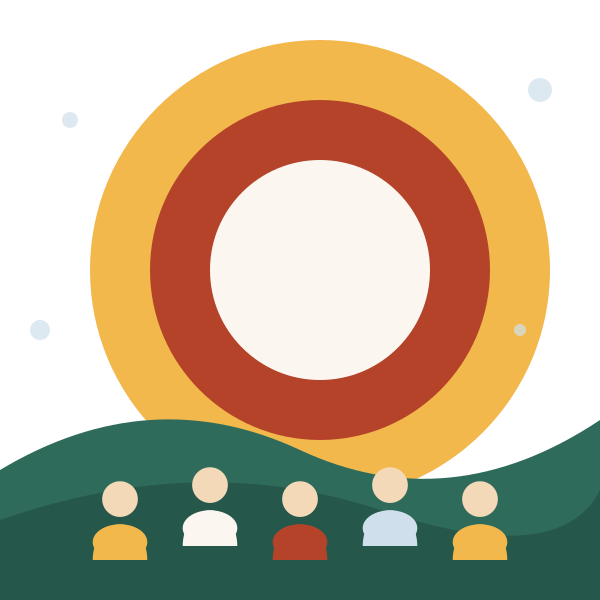

Pensamiento crítico
Analizas problemas sociales reales con teorías, debate y trabajo en equipo.
Nuevo programa académico · 2027
Licenciatura en Innovación Social y Ciudadanía Digital: cuatro años para aprender a leer los problemas de tu comunidad, analizarlos con datos y diseñar soluciones que sí funcionan.

Qué aprenderás
Cada ciclo combina teoría, práctica y proyecto real. Así sales con criterio, herramientas y portafolio.
Analizas problemas sociales reales con teorías, debate y trabajo en equipo.
Aprendes a recolectar, visualizar e interpretar datos para decidir mejor.
Participación, derechos y ética en entornos digitales y redes comunitarias.
Diseñas proyectos con impacto medible junto a organizaciones y comunidades.
Experiencia
Tu futuro
Egresarás preparado para trabajar en el Estado, ONG, empresas con propósito y organismos internacionales.
Gestión de proyectos socialesAnalista de políticas públicasInvestigación socialParticipación ciudadanaResponsabilidad social
Ver perfil del egresado“Una sociedad mejor no se improvisa: se estudia, se conversa y se construye con otros.”
Dudas frecuentes
¿No encuentras tu respuesta? Escríbenos desde la página de admisión.
Completa tu solicitud en menos de 3 minutos.